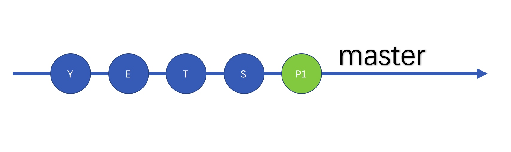

git 的 merge, rebase 和 squash
在团队合作中，毫无疑问，我们需要一个版本管理工具，相对于 SVN 这种在我们看来是老古董的工具，Git 在年轻化的团队中更受欢迎。并不仅仅是跟着大神们（Linux系）的路子在走，所以感觉很牛逼，而是 Git 真的很牛逼，当然，牛逼的同时你需要的学习曲线也是很陡的。
这几天我就遇到了一个问题，其实也不是遇到问题，而是遇到了疑惑，那就是我在 github 系统中 merge 同时的 PR 的时候发现有好几个选项，但是，却说不清楚这几个选项分别代表什么含义，所以就稍微花了点时间了解了下，顺带做个总结。
在 merge pr 的时候，默认是有三种选项的，分别是
- 普通的 merge
- rebase merge
- squash merge
这其实对应于我们在合并分支的时候的几种方式，所以我就以本地分支的形式来说说有啥区别。
假设我们一开始的 master 分支上已经有了几个提交，就像这样：

然后，我们切出一条开发的分支，进行了一些 Feature 的开发，然后我们的分支可能就是这种情况：

这种情况还好，也比较常遇到，但是，现在问题来了，如果在这个时候 master 有了一些新提交（可能是其他分支合并进来的），那么这个时候情形就成了这样：

这个情况很有趣，但是我们不讨论，因为这和我们今天的主题无关，以后可以另外开一个话题来说，今天要说的是第二个情况。
说到合并分支，可能我们最熟悉的操作是这样的：
- 先切换到目标分支（
master） - 执行命令：
git merge devel - 删除旧分支（可以在上面一同做）：
git branch -D devel - 提交到远程分支：
git push origin master
好像这样没啥问题的样子，但是这样操作之后，你知道结果是怎么样吗？假设合并之前的这样的：

我们这么一番操作之后，那么最后我们的分支的历史将会是这样的：

是的，看上去很不错，也是一条直直的 commit line，我们在 devel 分支中的 commit 也是一个不差得保留在了 master 中。但是，很多时候，我们并不需要那么多的 commit，假设你给一个开源项目提交一个 Bug Fixes，然后一个简单的修改因为你的粗心大意 pr 了十几个 commit 过去，如果作者给你 merge 了，这就在这个项目的历史长河中增加了十几个 commit 啊，以后的人看 commit history 估计都崩溃了吧；同时，对于你自己管理的项目来说，当你 merge 之后发现有问题，想回滚都蛋疼！
在使用 git 的过程中，可能你遇到过想要合并多个 commit 为一个，然后很多人会告诉你用 git commit --amend，然后你发现里面有你的多个 commit 历史，你可以通过 pick 选择，squash 合并等等。同样得，merge 的时候也可以这么干，你只需要这么简单的两步：
- 切换到目标分支：
git checkout master - 以 squash 的形式 merge：
git merge --squash devel
你会发现，在 master 分支上居然有未提交的修改，然后你就需要在 master 上主动提交了修改，注意，这里是你 commit 的，也就是改变了 commit 的 author。结果是这样的：

这里好了，比前面普通的 merge 来说，我们只有一个 commit 了，不管在分支中 commit 了多少，这里都只有一个！
但是，作为处女座的程序员肯定是不能忍受目前的情况的，因为我们既想合并 commits，又想保留作者的信息，那么有没有什么好办法呢？肯定是有的啦，这个时候我们可以尝试一下 rebase，操作步骤是这样的：
- 先切换到
devel分支（不一样咯）：git checkout devel - 变基：
git rebase -i master - 切换回目标分支：
git checkout master - 合并:
git merge devel
这里完成了第二步之后我想你应该大概知道发生了什么事了，我们在 devel 里面对照 master 进行了变基，所谓的变基其实就是找到两个分支共同的祖先，然后在当前分支上合并从共同祖先到现在的所有 commit，所以我们在第二步的时候会选择怎么处理这些 commit，然后我们就得到了一个从公共 commit 到现在的单个 commit，这个时候别人讲我们这个 commit 合并到 master 也只会在 master 上留下一个 commit 记录，就像这样：

虽然这个 commit history 线看上去很不错，而且也比较符合实际情况，但是我们需要注意到的有点就是分支上的开发者需要自己执行变基操作，从而导致他的原始 commit history 变化了（可以理解成被合并了）。
相比一下前面三种方式，我们可以总结出一些东西：
rebase可以尽可能保持master分支干净整洁，并且易于识别authorsquash也可以保持master分支干净，但是master中author都是maintainer，而不是原ownermerge不能保持master分支干净，但是保持了所有的 commit history，大多数情况下都是不好的，个别情况挺好
参考